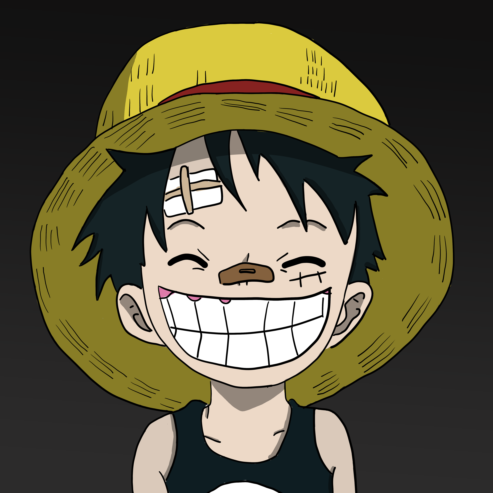
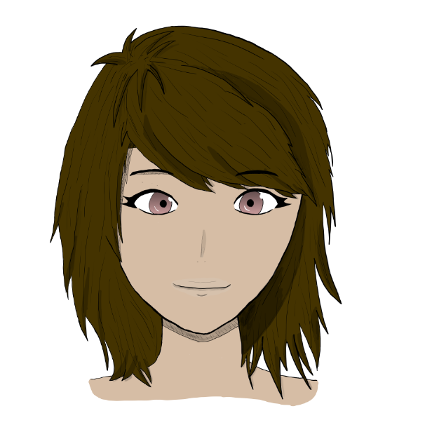

Qui suis-je ?

Mon parcour académique,
Je suis en première général. Je fais Latin et Allemand ainsi que ferMUN. Mes spécialités sont :
Plus tard, j’aimerais rentrer à l’EPFl. Je voudrais devenir développeur full stack ou travailler dans l’ingénieurerie au niveau des ICM que ce soit dans le domaine médical ou au contraire pour la création d'un produit plus ouvert au public.
Présentation personnelle,
Je m’appelle Elliott, j’ai 16 ans et je suis au lycée international de Ferney-Voltaire. Je pratique beaucoup de sports comme le volleyball que je pratique en club, le basket que je pratique à l’as du lycée ainsi qu’avec des amis et du badminton que je pratique également à l’as de mon lycée.
Mes centres d’activités sont :
- Le dessin, je dessine beaucoup avec une tablette graphique et sur papier (voir quelques exemples plus bas).
- Les jeux vidéo, je joue souvent à des jeux sur consoles, sur PC ou sur téléphone
- Je regarde beaucoup de films et de séries j’aime particulièrement l’animation.
- J’ai beaucoup tout ce qui as attrait au japon comme les mangas ou la culture japonaise en générale j’aimerais pouvoir y voyager un jour.
- Je passe aussi beaucoup de temps sur le reseau social discord sur lequel je code parfois des bot en javascript



Projet Sierpinski